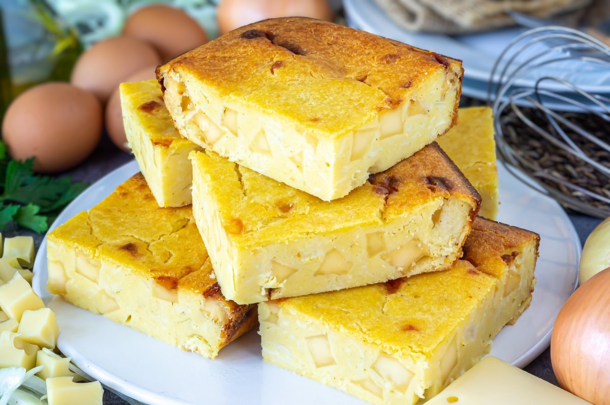

Sopa Paraguaya

La sopa paraguaya es un bizcochuelo salado de harina de maíz,
cebolla y queso Paraguay. Es herencia de la cocina mestiza cario
guaraní-española y es tradicional de la gastronomía de Paraguay.
Ingredientes
- 500gr de harina de maíz
- 250gr de queso cremoso
- 500ml de leche
- 3 huevos
- 2 cebollas
- 1 tazaaceite de maíz o girasol
- 1 cucharada de sal
Paso a paso
- Colocamos en un bolws la harina de maíz con el queso cortados
en cubitos (reservamos un poquito de queso) mezclamos con la
harina de maíz, precalentamos el horno
- Una vez bien mezclados el queso con la harina de maíz agrega solo
las yemas de los huevos y el aceite, separar en un bowls las claras batiendo
a punto nieve reservamos las claras batidas a punto nieve
- Seguimos agregando al preparado la sal y la leche de a poco integrando muy
bien todo (debe quedar semiliquida) de acuerdo a la hidratacion de la harina
de maíz (es un aproximado la medida de la leche puede ser + o -) pelamos y lavamos
muy bien las cebollas cortamos en plumas y en crudo agregamos a la preparación
- Mezclar muy bien todo, ahora agregar las claras a punto nieve con movimientos envolventes
con sumo cuidado (acá esta el secreto para que salga esponjosa y suave) aceitar o enmantecar
la fuente colocar el preparado y los cubitos de queso que reservamos por encima
- Llevar al horno precalentado a 200 ° entre 45 a 50 minutos o hasta que esté dorado pinchar con
un palillo si sale limpio es porque ya esta cocido, se puede comer caliente o frío.